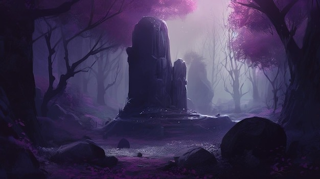

Decidís dejar la brújula y seguir caminando. El camino os lleva a una colina desde donde veis todo el Bosque Encantado. Al llegar a la cima, encontráis un antiguo altar con inscripciones que cuentan la historia del bosque. Al leerlas, sentís una profunda conexión con la historia y la magia del lugar. Regresáis a casa con un nuevo entendimiento y aprecio por la naturaleza y sus misterios.
El Misterio del Bosque Encantado
